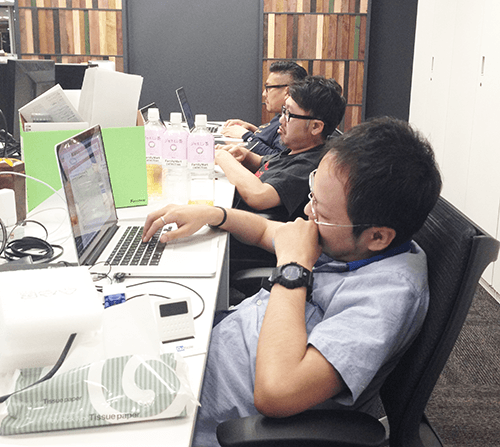

「おっさんエンジニアたちのお話」
高齢化社会。経済の発展とともに少産少死となった日本が抱える大きな課題であります。
皆さんの周りはどうでしょう。病院に行くとよく高齢化を実感しますが、
年齢の上昇と健康問題の数は比例すると思うので、たぶん錯覚です。
何の話や、というとても真っ当なツッコミはグッと堪えていただきつつ進めたい。進みたい。
じつは、これと似たような問題、Fringe81にもありまして。
高齢化問題。
「トップページ見ると結構みんな若そうじゃないか」
確かに。トップページで見ると、ネットベンチャーらしく、
若そうな（実際、平均年齢２８〜９くらいかと）溌剌とした印象を与えております。
しかしながらその内実は、この赤枠の男達が激しく平均年齢を上げにかかっており、そしてこの男達はもれなく全員
エンジニア
なんですね。
今回はこのFringe81の愛すべき「働くおっさんエンジニア達」について書いてみようと思います。
自虐的な笑いをとりたいとか、そういったものではなく、淡々とファクトを並べていきます。
もう最初に結論を書いてしまいますが、一番何を伝えたいのか率直に申しますと
「若いエンジニア社員・インターン大募集！」
と、声を大にして、フォントも大にして申し上げたい。
●さて、弊社、年々エンジニアの高齢化が進んでおります。
どれくらい進んでいるかと申しますと、つい先日まで、最若手が今年で３３歳という状態でした。
しかも全員男です。技術部門とは言えど、ネットベンチャーで部門最若手が３３歳ってどうなんでしょうか。
飛び抜けて高い年齢も居ませんが、２０代がおらず、今年で平均年齢３５歳前後となると高齢化感は否めません。
年齢の分布、といいますかもう開発部所属社員の今年迎える年齢を書いてみると、
（２０１４年４月時点での社員８名）
３７歳
３６歳
３６歳
３５歳
３５歳
３４歳
３４歳
３３歳
この文章もその中の一人がパンをむしゃむしゃ食べながら書いております。
もうじきW杯という時節ですので、年齢の客観的基準としてサッカー日本代表を用いると、
全員、MF 遠藤（３４）
最年長の遠藤選手ですら、ちょっと年下なのが悲しい。
「あれ、あの選手ベテランだったよね！？」と調べてもことごとく20代後半という。
３５歳ともなるとプレーヤーとしてナショナルチームに入るのは厳しい現実。
（Fringe81技術開発部一同、遠藤選手のご活躍を全力で応援しています）
一方、IT業界でも「エンジニア３５歳定年説」なんて恐ろしい言葉がありますが、
もし「エンジニア３５歳定年説」を支持するならば、
２年後には社員がいなくなってしまうというとても困った事態になってしまうので、断固、できません。
●何故、高齢化しているのか
この課題に立ち向かうべく、まずは「どうしてこうなった」の部分を。WHY、をですね。
色々理由はあるのでしょうが、一体全体何がボトルネックなのか。
─キャリア採用しまくったから説─ ネットベンチャー特有の「少数精鋭編成＝スキル重視」の即戦力補強を重ねた結果、 必然的に年齢高めになったんじゃないか説。 しかし、創業２年目にして新卒エンジニアも入っているので、弊社の場合これが全てでもない。
─もうそろそろ創業１０年経つから説─ と、なると「入社時はみんな若かった」という説が有力か。２０１５年の４月で創業１０年の節目となりますので、 新卒・中途共に会社と歩みを同じくして一年一年歳を重ねた結果と考えると、何か幸せな感じもあります。
─実は高齢化なんてなかった説─ 実は、業界的にみても特別高齢じゃないよ、という自意識過剰説。 たまたま目に映る他社様のエンジニアが若くて爽やかに見えているだけなのか。 インターネット産業の興隆から２０年近く経ちますし、「ウチは平均年齢もっと高いよ！」という会社もあるのかも。
うーん、どれとも言えないですね。複合していると思います。 それに、今更掘り起こして原因追及してもあまり意味がない気もしてきましたので、 続いて、もっと弊社のおっさんエンジニアのディティールを書きたいと思います。 「高齢化高齢化」と冒頭から、どうしてもネガティブな響きでありますので、 ついで、もう丸裸に、ネガティブな面から全て撒き散らしながら進めます。
─おっさんエンジニアの弱み─
光ある所には陰がある。陰があるから光は素晴らしい。 という事で、おっさんエンジニアたちの弱点を挙げてみます。 どうですか、支えてあげたくなりませんか？
深夜のアラートメールがほんとしんどい─ 年齢的な体力の衰えを隠しきれなくなってきており、深夜にサーバーの調子が悪くなった時の対応がしんどい。 しんどいため、予防策はかなり手厚くやっている。というか、もうそれが仕事の全てである。
深夜・早朝のメンテ対応がほんとしんどい─ 同じく、深夜や早朝に計画的なメンテナンスも行ったりもします。 うまいことシフト勤務等で時間調整し臨みますが、 体内時計の狂いは確実にダメージを蓄積します。
 座るのがしんどい─ 技術に取り組む姿勢は皆この上なく素晴らしいが、座る姿勢は最悪である。 筋力の低下と共に、自重を支える事が困難になりシャキッとした姿勢を保てません。 遠目に見ると席に居る事が分かりづらい、という実害もあります。 ※写真は夕日と共に沈むおっさんエンジニア達。ジャスミン茶好きなんですね。
飲み会の後半がしんどい─ 社内の若手たちとも積極的に飲みに行くおっさん達ですが、乳幼児レベルにすぐ眠くなります。 一見飲み潰れているようで紛らわしいですが、ただの肉体疲労によるものですので介抱は不要です。 また、尿酸値高めの者は開幕からレモンサワーで乾杯です。 贔屓の店は「鳥貴族 六本木店」。
●活躍するおっさんエンジニア
続いて、おっさんエンジニアの強み。 こんな場面で、おっさんエンジニアはまばゆいばかりの光を放ちます。 どうですか、教えを請いたくなりませんか？
トラブル時の安定感─ 一番はこれに尽きるんじゃないでしょうか。 万一のトラブル時にも盤石な横綱相撲をみせます。 ──たかがメインサーバーをやられただけだ、と。 ２４時間３６５日、お客様へ安定したサービスをご提供できるのも、裏で熟練エンジニアの経験が支えているからです。
設計力が高い─ そもそも、システムの設計段階で多くの運用トラブルを見越し、未然に防いでいる部分も見逃せません。 設計の善し悪しはサービスの品質は勿論、コストにも直結するためとても重要です。 スラムダンクでも海南の牧が「ディフェンスとは経験から来る予測である」と言い切った通り、 ここにも大人のテクニックが生きています。
技術のカバー範囲が広い─ 全員がフルスタックというと大袈裟ですが、各人、ネットベンチャーの最前線で長いキャリアを積んでおり、幅広い知識と経験を持っています。昨日までサーバを弄くり回していた人間が、今日はフロントエンドの実装をしています。 スピード感のある現場ですので、アサインに柔軟性が持てるというのは大きなメリットです。 なんか、良い事書けた気がします。
働き方の生産性が高い─
経験豊富なおっさんエンジニアは仕事もスマートです。ダラダラ仕事をしません。
段取りも抜かりなく、やるべき仕事はサクサクと片付けて早く帰ります。
「家庭円満」というのも仕事をする上での大事な環境である、
という極めてプロフェッショナルな考えを持っています。
●若者よ、来たれ
いかがでしたでしょうか、Fringe81の「働くおっさんエンジニア」。
おかげさまでつい先日２０代の若武者二人が入社して、少し若返りましたが、まだまだ足りません。
「弟子入り」でも「引導を渡しにくる」でもどちらでもかまいません。
「次世代を担う、イキのいい若手エンジニア求む！」
教えを請うも良、技を盗むも良、
ベテランエンジニアとの仕事は、必ずあなたのキャリアのプラスになります。
我こそは、という方からのエントリーをお待ちしております！